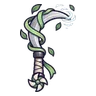

ใบมีดกระดาษ
มอนธาตุลม Lv 78–88
เจอที่
| แมพ | โซน | Lv | ภูมิภาค |
|---|---|---|---|
| หอบัญชีใต้วิหาร ชั้น 1 | 78–81 | เมืองหอระฆัง | |
| หอบัญชีใต้วิหาร ชั้น 2 · ห้องบัญชี | 82–85 | เมืองหอระฆัง | |
| หอบัญชีใต้วิหาร ชั้น 2 · ห้องบัญชี | 84–88 | เมืองหอระฆัง |
ค่าสถานะตามเลเวล
| Lv | HP | ATK | DEF | MDEF | EXP | Job |
|---|---|---|---|---|---|---|
| 78 | 34,398 | 198–297 | 16 | 21 | 107 | 80 |
| 83 | 41,514 | 214–321 | 17 | 22 | 113 | 85 |
| 88 | 49,445 | 231–346 | 18 | 24 | 120 | 90 |
ตีด้วยธาตุไหนดี
แรงขึ้น: ดิน ×1.5 พิษ ×1.25
เบาลง: น้ำ ×0.5 ลม ×0.25
วัตถุดิบที่ดรอป
| ของ | โอกาส | |
|---|---|---|
| ใบมีดกระดาษหมึก | 55% | 1 ชิ้น (15% ได้ 2) |
อุปกรณ์ที่ดรอป (7)
| ของ | โอกาส |
|---|---|
| 0.25% | |
| 0.25% | |
| 0.25% | |
| หนังสือเวทครอบหัว | 0.08% |
| 0.06% | |
| 0.06% | |
 เคียวคู่พายุหมุน | 0.06% |
สกิล
ม่านเวท (Lv 25+) · ม่านเวท (Lv 60+) · ยิงกระจาย (Lv 60+)